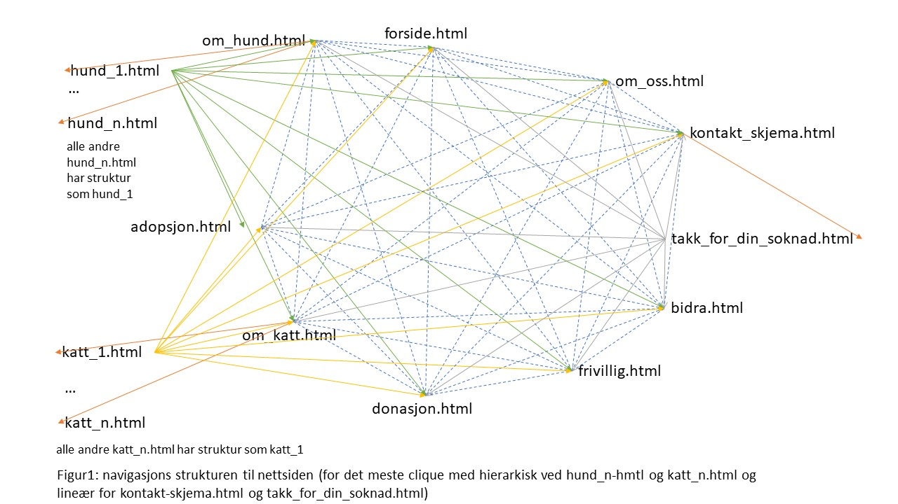
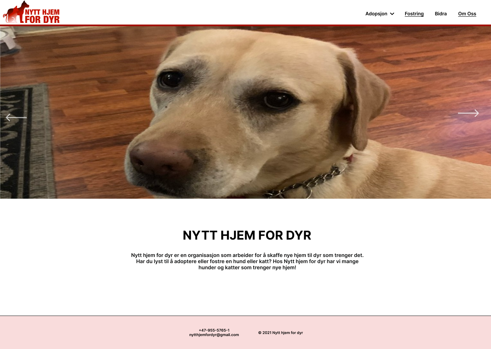
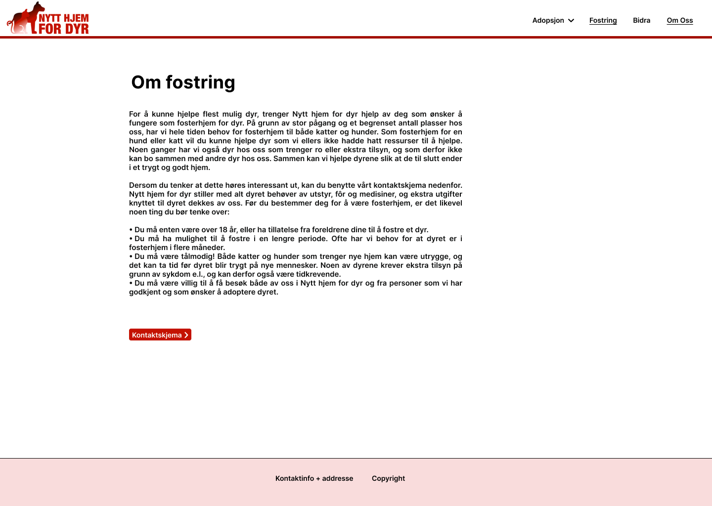
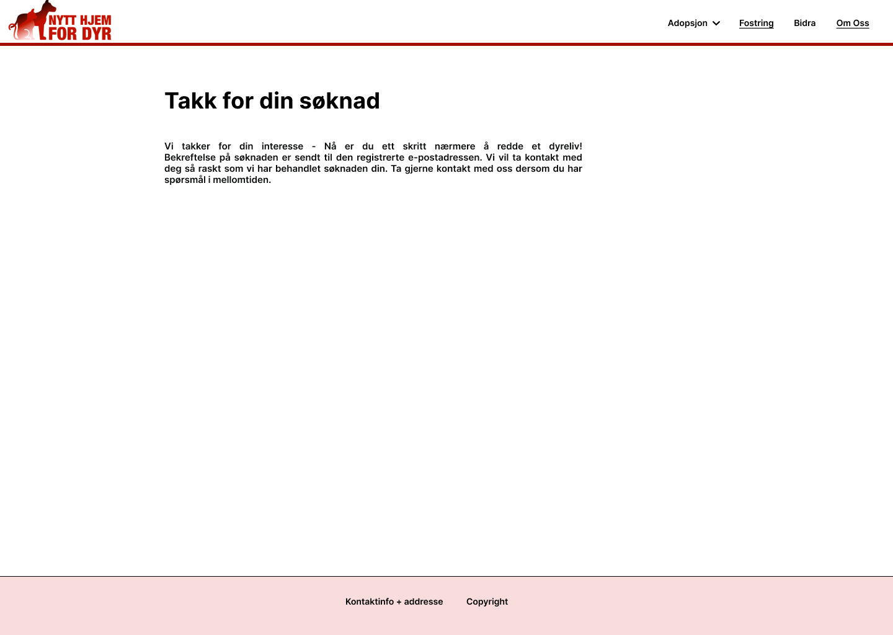

Klient
- Klient: Einar Lillevik
- Stilling: Daglig leder
Målgruppe, formål og mål
Hensikten med nettsiden er å gjøre det mulig for personer som ønsker det å adoptere eller fungere som fosterhjem for dyr som trenger et hjem. Nettsiden skal derfor hjelpe organisasjonen med målet om å nå ut til flest mulig med informasjon om adopsjon, mulighet for å være fosterhjem samt informasjon om dyrene som er ledige, slik at dyrene som trenger det kan få et nytt hjem raskest mulig. I tillegg vil nettsiden inneholde informasjon om hvordan man kan støtte organisasjonen, slik at de som kan og vil har mulighet til å bidra til å holde organisasjonen gående. Brukerne vil i hovedsak være mennesker på utkikk etter dyr de kan fostre midlertidig eller adoptere permanent, og som ønsker informasjon om organisasjonen og om ledige dyr. I tillegg kan informasjon om organisasjonen også være aktuell for mennesker som er nødt til å adoptere bort dyrene sine. Til slutt vil også folk som vil bidra med frivillig arbeid eller pengedonasjoner kunne ha bruk for informasjon på nettsiden om hvordan de kan bidra.
Navigasjonsstruktur
Strukturen til nettsiden vil være for det meste clique, der unntaket er sidene som har informasjon om en bestemt hund eller katt og takk_for_din_soknad.html. De sidene er strukturert i to hierarkier, den ene med katte-sider under katt.html og den andre hunde-sider under hund.html. Når det gjelder takk_for_din_soknad.html er den strukturert lineært og brukeren vil bli sendt til den etter at de har fylt ut et kontaktskjema. I tillegg kan en side om en bestemt hund eller katt nå de andre sidene som er strukturert etter clique, men den kan ikke nå en annen hund- eller katte- side. En hunde-side kan bare nås gjennom om_hund.html og en katte-side kan bare nås gjennom om_katt.html. takk_for_din_soknad.html kan også nå clique sidene. Det bør også nevnes at noen av linkene til de faste sidene dukker ikke opp før musen “hover” over menybaren.
Grunnen til at vi har for det meste valgt clique er at brukeren skal lettere navigere de faste sidene. F.eks. en bruker kan gå direkte fra forside.html til en underside som om_katt.html for å se på om det er noen katter de liker. Clique kan derimot ikke brukes med alle de bestemte og varierende hunde- og katte-sidene fordi det er for mange av dem. Det er derfor bedre å ha et hierarki struktur der slik at brukeren ikke må se linker til hunder når de er inne på om_katt.html. For eksempel når brukeren trykker seg inn på katten “Cleo” så er det ingen linker til hunder eller andre katter som kunne skapt forvirring. Den lineære strukturen fra kontakt_skjema.html til takk_for_din_soknad.html er fordi brukeren burde ikke se takk_for_din_soknad.html hvis de ikke hadde fylt ut kontaktskjemaet. Ellers ville det skapt forvirring hos brukeren om de har sendt inn et skjema uten å mene det.
Sideoppsett og utseende
- Farge schema:
- Backgrunn: #FFFFFF
- Navbar: bakgrunnsfarge: #FFFFFF, font-farge: #000000, Border-bottom: #A31000
- Footer: bakgrunnsfarge: #F9DCDC, font-farge: #000000, border-top: #000000
- Tekst: #000000
- Skriftstørrelse og type:
- Type: Inter
- Overskrifter: 36px
- Mellomoverskrifter: 30px
- Tekstinnhold: 15px
- Footer: 14px
- Tekst: 14px
- Logo:
- Font: HelveticaNeue-CondensedBlack
- Farger: #000000 (svart), #C41200 (rød), #F9DCDC (rosa)
- Footer
- Footer i bunnen alltid på samme plass
- Inneholde kontaktinformasjon som telefonnummer, e-postadresse, adresse osv. til bedriften
- Navbar:
- Navbar på topp med logo, ikke alltid på samme plass ved scroll
- Skal være med dropp meny for to av elementene i Navbaren
- Utforming:
- Innholdet er alltid midtstilt
- Når man velger et dyr eller sender inn søknad skal dette åpnes i en ny tab
Innehold
Forside
Forsiden skal være den første siden man kommer til når man besøker nettsiden til Nytt hjem for dyr. Forsiden vil ikke ha mye innhold, men skal inneholde bilder og noe tekst som gjør at brukeren av nettsiden får et innblikk i organisasjonen og deretter kan trykke seg videre til den siden som er mest aktuell for vedkommende. Forsiden skal være enkel og intuitiv, og gjøre brukeren nysgjerrig på resten av innholdet på nettsiden.
Øverst skal forsiden inneholde en navigasjonsbar som kan brukes til å navigere videre til de andre sidene. Logoen til organisasjonen skal vises til venstre i navbaren. Under denne skal det være et slideshow av bilder (browserwidth) der brukeren kan klikke på piler for å bla til neste bilde. Under slideshowet skal det være en kort tekst som forklarer at brukeren kan bruke nettsiden til å finne info om katter og hunder som trenger adopsjon/fosterhjem. Samlet sett håper vi dette vil fange oppmerksomheten til brukeren og gjøre at hun/han får lyst til å undersøke resten av nettsiden. Dette skal være enkelt, siden vi har en navbar som gjør det lett å klikke seg videre.
Fosterhjem
Siden om fosterhjem skal holdes enkel. I motsetning til for adopsjon vil organisasjonen ikke legge ut bilder av dyr som trenger fosterhjem, da det vanligvis ikke vil være mulig for fosterhjemmet å velge seg ut dyr. Vi vil derfor holde det enkelt, og heller informere om hva det innebærer å være fosterhjem og hvilke krav som stilles i teksten. Til slutt skal brukeren kunne klikke seg videre til et kontaktskjema, dersom man etter å ha lest teksten tenker at å være fosterhjem kan være aktuelt. Navbaren skal være plassert på toppen av siden slik at brukeren lett kan bevege seg til andre deler av nettsiden.
Bidra
Siden «Bidra» skal gi informasjon til brukeren om muligheten for å bidra til organisasjonen enten ved å bli frivillig eller ved å donere penger. Også denne siden vil holdes enkel, og kun inneholde tekst med informasjon om hva det innebærer å være frivillig og om hvordan man kan bidra med penger. Etter en kort introtekst skal underoverskrifter og tekst om de to ulike måtene å bidra på gjøre det enkelt og greit for brukeren å finne fram til aktuell informasjon raskt. Det skal gå tydelig fram hva man skal gjøre dersom man ønsker å bli frivillig og hvordan man kan donere penger. Navbaren skal være plassert på toppen av siden slik at brukeren lett kan bevege seg til andre deler av nettsiden.
Om oss

Siden «Om oss» skal inneholde et bilde øverst (888.57x334.49px, centered) som fanger brukerens oppmerksomhet. Deretter skal brukeren få en kort informasjonstekst om organisasjonens historie og dens mål og arbeid. Nederst på siden skal brukeren finne all aktuell kontaktinformasjon til organisasjonen, slik at det er enkelt å vite hvordan man kan komme i kontakt med Nytt hjem for dyr. Navbaren skal være plassert på toppen av siden slik at brukeren lett kan bevege seg til andre deler av nettsiden.
Info adopsjon dyr
Navbar og footer i samme stil som forside. Stort bilde av et dyr rett under Navbaren, øverst. Under bildet er det plassert en overskrift «Om adopsjon». Videre kommer tre ulike avsnitt delt opp i: (1) generell informasjon om adopsjon, (2) Hvilke krav som stilles for å kunne adoptere og (3) Beskrivelse av prosessen. Man kan videre under klikke seg innpå katt eller hund ut fra ønske, og komme til mer detaljert informasjon om det respektive dyret.
Adopsjon katt
Denne siden er en egen side med bare katter og som beskriver omfanget av katter, hva som kreves, samt et bibliotek av kattene som for tiden kan adopteres. Bildene er plassert 3x3 med navn og alder stående under bildet. Klikker man på bildene, kommer man til egen side med informasjon om det respektive individet. Lik Navbar og footer som på forside.
Adopsjon hund
Denne siden er en egen side med bare hunder og som beskriver omfanget av hunder, hva som kreves, samt et bibliotek av hundene som for tiden kan adopteres. Bildene er plassert 3x3 med navn og alder stående under bildet. Klikker man på bildene, kommer man til egen side med informasjon om det respektive individet. Lik Navbar og footer som på forside.
Dyr til adopsjon

Navbar og footer lik som på forside. Overskrift øverst på siden med navnet til dyret som er tilgjengelig for adopsjon med et bilde av det respektive dyret under. Informasjon slik som rase, alder, personlighet og hverdagsrutiner plassert i samme bredde og under bildet av dyret, i tillegg til at info-bokser slik som kjønn, rase, barnevennlig og fødselsdato presenteres i lik bredde. Helt nederst finner man en «send søknad»-knapp, som ved et klikk fører videre til kontaktskjema for adopsjon og fostring.
Kontaktskjema
Kontaktskjema som inneholder utfylling av Navn, Adresse, telefonnummer, E-post, Hvilket dyr man ønsker å adoptere, ønsker man å fostre eller adoptere og et felt med annet (åpent for å kunne oppgi mer utfyllende informasjon). Siden er koblet til både fostring og adopsjon, og kan klikke seg hit via begge.
Takk for søknad
Automat-side brukeren kommer til etter å send inn et utfylt kontaktskjema. Viser en bekreftelse på at man har sendt inn skjemaet, samt gir informasjon om prosessen videre. Siden holdes enkel, men kun nødvendig informasjon. Ingen bilder/illustrasjoner.
Minstekrav
For nettsiden planlegger vi å legge til følge Javascript applikasjoner
- Navbar:
Formålet å ha navbar som en JavaScript applikasjon på grunn av den skal ha hoverable navbar. Formålet å ha den effekten er at det skal være enkelt for brukeren å navigere gjennom nettsiden, spesielt kategorier som skal ha under kategorier f.eks. adopsjon.
Dette blir gjort av Hermann.
- Footer:
Formålet å ha footer som en JavaScript applikasjon er at den skal enkle for endre på om den skal være behov for det. Footer vil inkludere kontakt adresse og organisasjonsnummer
Dette blir gjort av Hermann.
- Image slider:
Formålet med denne effekten er å vise flere bilder på organisert måte som ikke vil ta vekket oppmerksomhet fra innholdet på nettsiden. Også gjøre nettsiden mer dynamiske og interaktive for brukeren. Image slider effekt vil hovedsakelig bare være på forsiden og egne side til dyret.
Dette blir gjort av Sunniva og Kari.
- Sorting:
Formålet med sortering av dyrene er for brukeren skal lettere finne dyret som passer de med tanke på alder, kjønn, allergivennlig og barnevennlig.
Dette blir gjort av Andrine
- Form validation:
Formålet å form validation som egne Javascript applikasjon er at brukeren kan få tilbakemelding som f.eks. om error. Dette blir vist et popup vindu som forteller brukeren om feilmeldingen og hva dem trenger å gjøre.
Dette blir gjort av Helga
Plan
Organisasjons skjema
Alle filene under vil være i mappen nytt_hjem_for_dyr. Mappen vil bli skapt under kode fasen av prosjektet og jobbet mellom oss gjennom Github.
Lister over filer og mapper:
- forside.html
- adopsjon.html
- om_hund/
- hund_1.html
- hund_2.html
- ...
- hund_10.html
- om_katt/
- katt_1.html
- katt_2.html
- ...
- katt_10.html
- fosterhjem.html
- om_oss.html
- kontakt_skjema.html
- takk_for_din_soknad.html
- bidra.html
- img/
- logo.png
- hund/
- hund_1_1.png
- hund_1_2.png
- hund_1_3.png
- hund_2_1.png
- ...
- hund_10_3.png
- katt/
- katt_1_1.png
- katt_1_2.png
- katt_1_3.png
- katt_2_1.png
- ...
- katt_10_3.png
- js/
- navbar.js
- image_slider.js
- footer.js
- form_validation.js
- sortering.js
- css/
- styling.css
Arbeidsfordeling og tidsfrister
| Filnavn | Beskrivelse | Ansvarlig | Tidsfrist |
|---|---|---|---|
| Logo.png | Helga | 07/10/2021 | |
| forside.html | Forsiden til nettsiden. Kommer til å ha annerledes styling enn andre sider | Hermann | 24/10/2021 |
| adopsjon.html | Oversiktsside over informasjon om adopsjon samt prosessen og hvilke krav som stilles for adopsjon | Sunniva og Kari | 24/10/2021 |
| om_hund.html | Siden viser hvilken hunder som er for adopsjon | Andrine | 22/10/2021 |
| hund_n.html | Enkelt annonse av hund som er mulig å adoptere. | Sunniva | 24/10/2021 |
| om_katt.html | Siden viser hvilken katter som er for adopsjon | Andrine | 22/10/2021 |
| katt_n.html | Enkelt annonse av katt som er mulig å adoptere. | Kari | 24/10/2021 |
| fosterhjem.html | Informasjonsside om fosterhjem | Helga | 22/10/2021 |
| bidra.html | Informasjonsside om hvilken muligheter det er for støtte organisasjonen | Andrine | 16/10/2021 |
| kontakt_skjema.html | Kontaktskjema som brukes for adopsjon/fostring | Helga | 22/10/2021 |
| takk_for_soknad.html | Side som kommer opp når kontaktskjema er sendt inn | Helga | 22/10/2021 |
| om_oss.html | Side som fortelle om organisasjonen og gir kontaktinfo | Hermann | 15/10/2021 |
| navbar.js | En javascript legger til navbar i alle html filene. | Helga | 15/10/2021 |
| kontakt_skjema.js | En Javascript fil som utføre funksjonaliteten til form validation i kontakt_skjema.html. | Hermann | 29/10/2021 |
| image_slider.js | Bildegalleri av dyrene i annonsene for adopsjon og vising i forside | Sunniva og Kari | 02/11/2021 |
| sortering.js | Sortering av dyr for adopsjon på sidene og om_hund.html og om_katt.html | Andrine | 02/11/2021 |
| footer.js | En javascript som skal legge til en footer i alle html filene | Hermann | 15/10/2021 |
| styling.css | Styling til hele nettsiden | Alle | 02/11/2021 |
| Sluttkontroll | Tester alle filer for mulige feilmeldinger, siste gjøremål på javascript og testing av koden | Alle | 05/11/2021 |